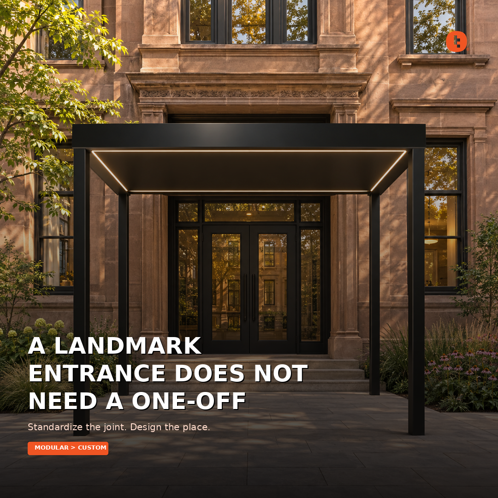

Instagram 1
Insight: A landmark entrance does not need a one-off connection. Explanation: A repeatable aluminum bay can sit quietly against historic masonry while the facade, threshold and planting carry the address-specific character. Shift: Standardize the joint. Design the place. Tudelü is a click-together modular aluminum system with concealed connections and no welding. The continuous mitered fascia contains integrated warm-white LED. Choose matte black, dark bronze, warm white, or natural silver. $60/sqft.